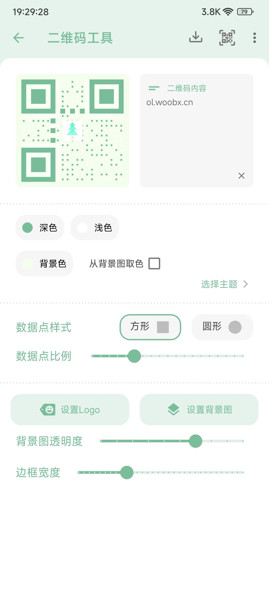

一个木函踩坑实录：这几个问题我花了半天才搞定
一个木函功能多到离谱，但用好它没那么简单。冻结失效、权限拒给、系统版本不兼容——这些坑你大概率会遇到，提前看完能省不少时间。
一个木函我用了快两年，从最早的版本一路更到现在。它的官网上列了快六十个功能，工具集大是大，好用是真好用，但说实话踩的坑也不少——每次更新或者换手机，总有那么一两个功能突然就不对劲。
这次换了台红米 K80 Pro，从头折腾一遍的过程中又撞到好几个老问题。干脆把这些翻来覆去踩过的坑整理一下，万一有人跟我一样被卡住，不用再像我那样去论坛翻半天回复。
坑一：冻结按钮点了没反应，以为软件要重装
这是我遇到次数最多的一个坑了。第一次是在旧手机上想冻结一个预装的垃圾浏览器，点了冻结之后界面弹了个 toast 说"操作成功"，结果退出去一看，那浏览器图标还在，后台也在跑。我当时以为是版本 bug，卸载后从Cerulean下载重新装了一遍，还是一样。
后来去Cerulean文档翻了一下才搞明白，安卓 10 之后系统就给系统预装应用加了保护——不是一个木函没干活，是系统不让它动。普通应用你想怎么冻结都行，但厂商塞进去的那些，要么需要 root 权限，要么就得走 ADB 命令，再不行进系统设置里手动停用（效果其实差不多）。
小米 MIUI 还比较特殊，很多预装应用在系统设置里的停用按钮直接就是灰的。我之前有个朋友用小米想冻结小米商城，设置里根本找不到停用的地方，最后还是解锁 Bootloader 刷了 Magisk 才搞定——说实话为了冻一个应用搞 root，成本有点高。
症状：点冻结后没反应、提示需要 root、或者冻结了但应用照样出现。原因：安卓版本限制 + 厂商 ROM 保护，系统预装应用走普通路径冻不了。解法：先试系统设置里能不能手动停用；不行就卸载；重度需求才考虑 root 或专门的冻结工具比如冰箱、小黑屋。

坑二：麦克风权限明明给了，分贝仪还是不出数值
这个坑是我前阵子才遇到的。晚上想测一下楼上装修到底有多吵，打开分贝仪，界面就卡在那里不动，数字永远是 0。进应用设置看权限，麦克风明明是"允许"状态，关了再开也没用。
折腾了快十分钟才发现——我的手机壳把底部麦克风孔给挡住了。一个木函的分贝仪是实时采样的，麦克风被挡住之后采样到的都是极微弱的背景音，可能刚好落在某个阈值以下就不显示了。把手机壳拆了，声音瞬间就出来了。
还有一种情况是手机系统版本更新之后，权限被重置了。安卓有时候更新系统会悄悄把一些应用的权限改回"询问"，尤其是麦克风、位置这种敏感权限。如果你之前用得好好的突然不行了，先去设置里确认一下权限状态。
症状：分贝仪无数值、卡在 0、或者提示无法启动。原因：麦克风孔被遮挡、系统更新重置了权限、或者授权路径没走对（有些手机需要先授权悬浮窗才能用截图类功能）。解法：拆壳试试 → 检查权限设置 → 重启应用。真不行就进系统设置里的应用管理，找到一个木函，清除数据后重新授权一遍。
坑三：取色器取到的颜色和肉眼看的不一样
做设计的时候经常用到取色器，有一次我取了一张网页 banner 的主色，截图看是橙红色，取色器给的 HEX 是 #FF6B35，可我手动对比了一下感觉偏了好几个色度。
后来去查了一下，屏幕本身的色温设置会影响取色精度。如果你的屏幕开了护眼模式、或者手动调过色温偏移，取色器采样到的颜色就不是"真实"颜色，而是经过屏幕处理之后的显示色。而且不同手机屏幕的色域本来就不一样，同一个东西在 OLED 屏和 LCD 屏上显示出来色值就不同。
还有一点，取色器需要悬浮窗权限，有些手机（比如 OPPO 的 ColorOS）的悬浮窗授权路径特别深，藏在"应用行为管理"里面，不是常规的"权限管理"。找不到的话直接在系统设置顶部搜索框搜"悬浮窗"就行。
症状：取到的色值和预期不符、或者取色器打不开。原因：屏幕色温/护眼模式干扰了采样、悬浮窗权限没给到位、或者不同屏幕硬件本身的色域差异。解法：关护眼模式再取 → 确认悬浮窗权限 → 如果要精确还原设计稿的颜色，还是得在电脑上用专业取色工具。

坑四：单位换算的结果"不对"，其实是进制搞混了
一个木函的全能单位换算我用得最多的场景是硬盘容量换算——买了个 1TB 的硬盘，想知道实际有多少 GB。结果算出来一会儿是 1000GB，一会儿是 1024GB，我一度以为软件算错了。
后来才发现是我自己搞混了。硬盘厂商用的是十进制（1TB = 1000GB），而系统层面用的是二进制（1TiB = 1024GiB）。一个木函里如果标注了"二进制 / 十进制"切换，记得选对你想要的那个。温度换算也是同理，不是简单乘个系数，有特殊算法，放心用就行——这块一个木函处理得没问题，别自己手算。
症状：换算结果和预期不一致。原因：不同领域对同一单位的进制定义不同（二进制 vs 十进制）。解法：确认换算类型里的进制选项，选对了再看结果。
防坑清单
- 冻结系统预装应用前，先确认你的安卓版本和厂商 ROM，别浪费时间反复点冻结按钮
- 敏感权限（麦克风、截图、悬浮窗）出问题时，先排查是不是系统更新重置了权限，再排查硬件遮挡
- 屏幕开了护眼模式或色温偏移时，别用取色器做精确还原
- 单位换算涉及数据量时，注意二进制和十进制的区分
- 真遇到搞不定的，先去系统设置里手动操作（停用、清除数据），比在一个木函里反复试更快
知道这些坑之后，一个木函其实还是相当省心的——毕竟那么多功能集合在一个不到 10MB 的应用里，该踩的雷提前知道就好。相关的功能清单和排查资料同步维护在 GitHub、Gitee 和 GitCode，国内访问不到 GitHub 的时候直接换 Gitee 就行。